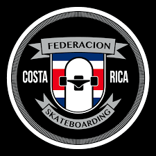

¿Quiénes somos?
- ¿Qué tipos de tablas de skate ofrecen y cuáles son sus características?
Respuesta: Ofrecemos una variedad de tablas de skate, incluyendo tablas de street, longboards y cruisers. Las tablas de street son ideales para trucos y patinaje en parques, las longboards son perfectas para desplazamientos largos y downhill debido a su estabilidad, y las cruisers son compactas y fáciles de maniobrar para el transporte urbano. Todas nuestras tablas están fabricadas con materiales de alta calidad como madera de arce canadiense y compuestos duraderos para asegurar resistencia y desempeño.
- ¿Cuál es la diferencia entre ruedas blandas y ruedas duras?
Respuesta: Las ruedas blandas, con una dureza generalmente entre 78A y 87A, son ideales para superficies rugosas y desplazamientos suaves, ofreciendo más agarre. Las ruedas duras, con una dureza de 88A a 101A y superiores, son mejores para trucos y patinaje en parques debido a su menor resistencia al rodar y mayor capacidad de deslizarse.
- ¿Cómo debo cuidar y mantener mi skateboard?
Respuesta: Para mantener tu skateboard en buen estado, límpialo regularmente para evitar acumulación de polvo y suciedad. Revisa y limpia los rodamientos, y lubrícalos si es necesario. Inspecciona las ruedas y cámbialas cuando estén desgastadas. Ajusta los ejes según tu preferencia y reemplaza cualquier componente dañado para asegurar un rendimiento óptimo.
- ¿Ofrecen servicios de montaje y reparación de skates?
Respuesta: Sí, ofrecemos servicios de montaje y reparación de skates. Nuestro personal puede ayudarte a montar tu tabla desde cero, ajustar los ejes, cambiar ruedas y rodamientos, y realizar reparaciones en general. Solo trae tu tabla y nosotros nos encargamos del resto.
- ¿Cuál es la talla adecuada de skateboard para mi hijo/a?
Respuesta: La talla adecuada de skateboard depende de la edad, altura y peso de tu hijo/a. Generalmente, para niños menores de 8 años, recomendamos tablas de 6.5 a 7.0 pulgadas de ancho. Para niños entre 9 y 12 años, tablas de 7.0 a 7.5 pulgadas son ideales. A partir de los 13 años, pueden usar tablas de 7.5 pulgadas en adelante. Ven a nuestra tienda y con gusto te ayudaremos a encontrar la tabla perfecta.
- ¿Tienen programas de clases o clínicas de skateboarding?
Respuesta: Sí, ofrecemos programas de clases y clínicas de skateboarding para todos los niveles. Tenemos clases para principiantes donde se enseñan los fundamentos del skate, así como clínicas avanzadas para mejorar habilidades y aprender trucos nuevos. También organizamos campamentos de skate y eventos comunitarios regularmente. Consulta nuestro calendario de actividades en la tienda o en nuestro sitio web para más información.
- ¿Dónde se encuentran?
Respuesta: Nos encontramos en Jose Maria Zeledon, Curridabat.
